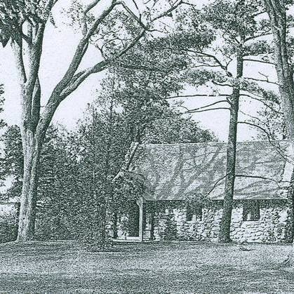

History of the E.C. Benton Library
Designed as a chapel by the architectural firm of Dull and Dallney, the Benton building was constructed in 1892 for the Belmont School for Boys which had purchased the former Cushing-Payson estate as its campus. With seating for 125, the chapel was used until 1899 when the school was amalgamated with Milton Academy and the boys left town. The school's land was bought by outside developers and almost became an amusement park, but fortunately that didn't happen. The site remained unoccupied until it was purchased by Col. Everett C. Benton in 1903. The Colonel moved his family into the mansion, Bellmont (for which the town is named) and made the chapel available for public meetings. Among the building's users were two new congregations which organized themselves there before erecting and moving to the Payson Park Congregational Church in 1913 and the Belmont Methodist Church in 1921, respectively.
After the death of Col. Benton in 1924 and the demolition of the mansion in 1929, his widow, Willena, and her six children offered the chapel to the town for use as a branch library. Their gift was made in the Colonel's memory and in honor of his many public contributions as a member of the Governor's Council, Belmont's Town Meeting Moderator, and the donor of a public library to his hometown of Guildhall, Vermont.
Belmont accepted the chapel, made the necessary renovations to convert it to a library, and officially opened it as the Benton Branch Library on June 10, 1930. The Benton Branch remained in use until it was closed in January 2009, due to budgetary difficulties within the town. In 2011 the Belmont Board of selectman licensed the Benton building to the non-profit Friends of the Benton Library. It reopened in May of 2011 as the Everett C. Benton Library, an independent community library.
The Benton building is a rare example of a late 19th century country Gothic chapel built of native fieldstone with a half-timbered and stuccoed entrance porch that used to be open. It is notable for the fine craftsmanship devoted to its construction, as demonstrated by its carefully laid stonework including a cornerstone with documents, its study oak-timbered entrance door with hand-wrought hardware, its elegantly simple wrought iron rooftop cross, and its handsomely shaped arched interior beam work. Aside from the shelving that was subsequently introduced against the wainscoting, its interior remains almost untouched, a single, soaring space with a high-crossed beamed "cathedral" ceiling that is bounded by a large arched Gothic window at one end and a raised semicircular apse at the other.